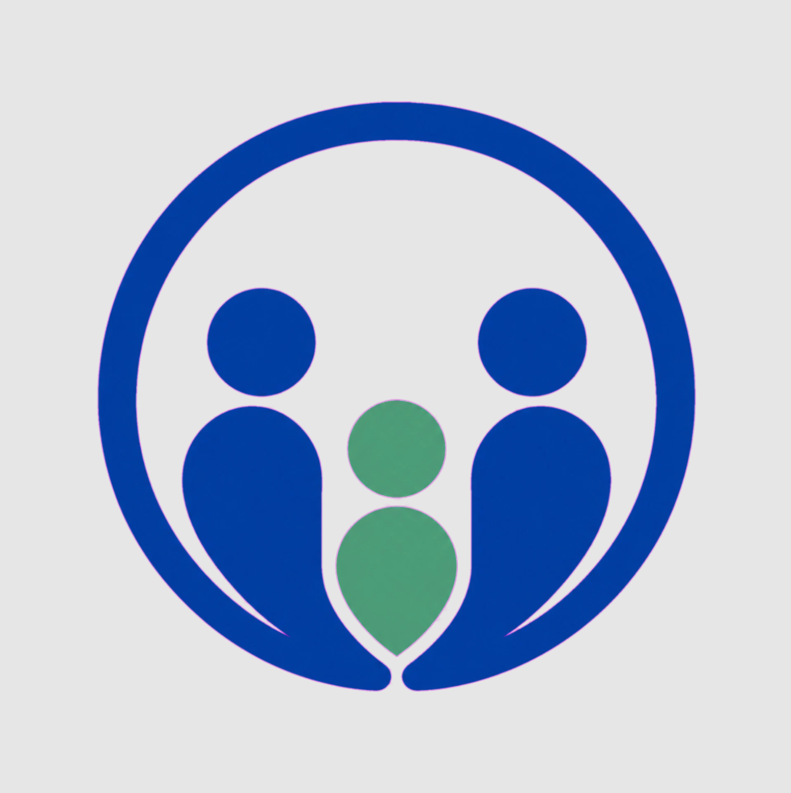

01 / AGENDA
Reuniões de diretoria
Todo primeiro encontro do mês é um momento de alinhamento e construção conjunta.
Primeira sexta-feira do mês

APMFC BARRETOSCuidado que conecta
Um ponto de encontro para profissionais que acreditam em uma saúde mais próxima, colaborativa e baseada em comunidade.
O Núcleo Regional da APMFC de Barretos aproxima pessoas, ideias e práticas da Medicina de Família e Comunidade.
Por aqui, você encontra os canais oficiais de comunicação, acompanha as reuniões da diretoria e acessa aulas produzidas para fortalecer a prática clínica e o trabalho em rede.
Acompanhe no InstagramMedicina que acontece perto
O núcleo existe para que a formação e o cuidado não fiquem distantes da realidade de quem vive e trabalha na região de Barretos.
Agenda & presença
Informações oficiais para acompanhar o núcleo sem perder o que importa.
Todo primeiro encontro do mês é um momento de alinhamento e construção conjunta.
Encontros presenciais em Barretos, com localização e rota disponíveis no Google Maps.
Abrir localizaçãoPara dúvidas, parcerias e informações, escreva para a equipe regional.
Enviar um e-mailConteúdos do Núcleo APMFC Barretos disponíveis no YouTube para assistir, revisar e compartilhar.
Acessar canal do YouTube